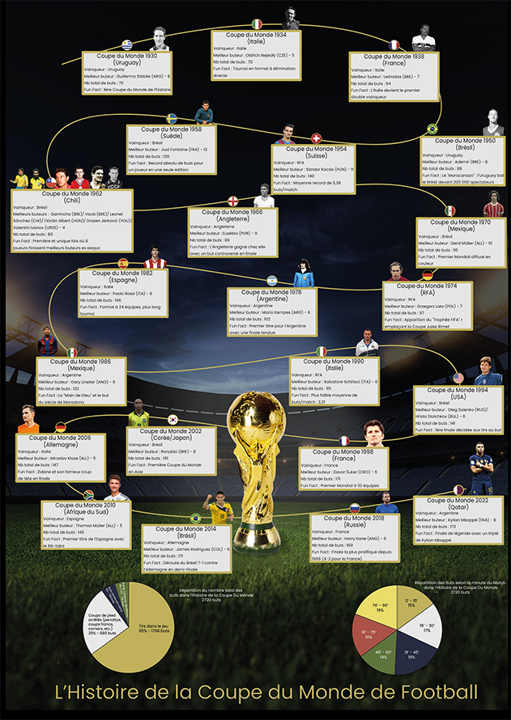

L'Histoire de la Coupe du Monde
Le Projet
Dans le cadre du cours de Veille et Tendances Web, l'objectif était de concevoir une affiche de Data Visualisation. Ce projet consistait à traduire des données complexes en un support visuel lisible, cohérent et esthétique au format A4.
Passionné par le sport, j'ai choisi de retracer l'histoire des buts marqués en Coupe du Monde de 1930 à 2022. Chaque édition est représentée par une carte détaillée incluant l'année, le lieu, le vainqueur, le meilleur buteur, le nombre total de buts inscrits lors du tournoi, ainsi qu'une anecdote.
Direction Artistique
Le design repose sur un contraste fort : un fond sombre évoquant la pelouse d'un stade sous une "lumière divine" pour magnifier le trophée, permettant aux cartes de données de ressortir au premier plan.
L'ajout des portraits des meilleurs buteurs humanise la data, tandis que deux diagrammes en bas de page offrent une analyse comparative globale de l'évolution du nombre de buts au fil des décennies.
